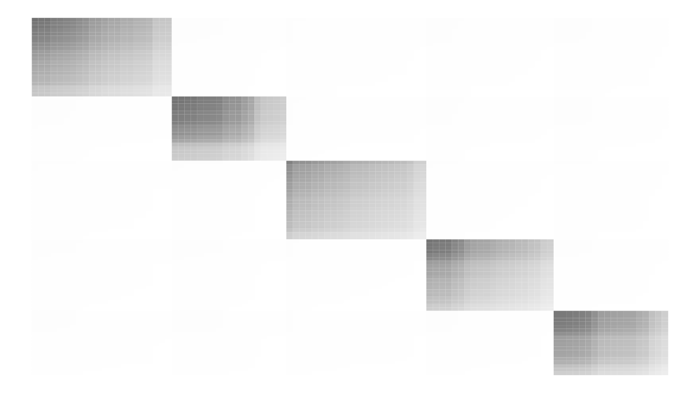
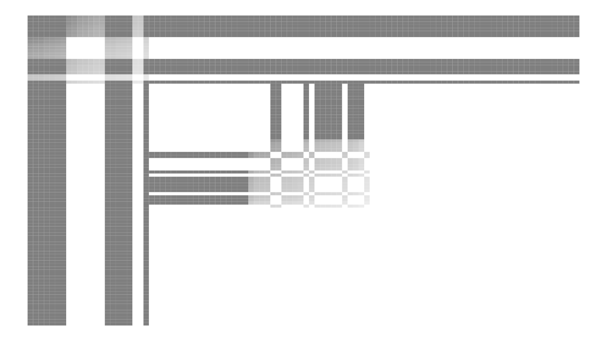

Identified interventions under a linear mediated RDPG
Source:vignettes/interventions.Rmd
interventions.Rmd
model1 <- function(n, k = 5, prob_trt = 0.5, mu = NULL, theta = NULL, Phi = NULL, Delta = NULL) {
# 1. sample C
B <- matrix(0.01, nrow = k, ncol = k)
diag(B) <- 0.8
pi <- rep(1 / k, k)
C_model <- dcsbm(
theta = runif(n, min = 1, max = 3),
B = B,
pi = pi,
expected_density = 0.1
)
C <- C_model$X
# 2. choose who to treat: everybody in blocks 1, 2, 3
# trt <- rbinom(n, size = 1, prob = as.integer(C_model$z) < 4)
trt <- rbinom(n, size = 1, prob = 0.5)
# 3. intervention to form X
if (is.null(mu)) {
mu <- matrix(0, nrow = n, ncol = k)
}
if (is.null(theta)) {
theta <- rbind(rep(0, k))
}
if (is.null(Phi)) {
Phi <- diag(x = 1, nrow = k, ncol = k)
}
if (is.null(Delta)) {
Delta <- matrix(0, nrow = k, ncol = k)
}
X <- mu + trt %*% theta + C %*% Phi + trt * C %*% Delta
model <- list(
n = n,
X = X,
C = C,
trt = trt,
C_model = C_model
)
class(model) <- c("model1", "mediated_rdpg")
model
}
plot_shift <- function(data, mapping) {
color_map <- c(
"treated-stayed" = "blue1",
"start" = "darkgray",
"finish" = "firebrick2",
"stayed" = "darkgray"
)
ggplot(data = data, mapping = mapping) +
geom_point(aes(color = color)) +
geom_line(aes(group = id), color = "firebrick2") +
geom_vline(xintercept = 0) +
geom_hline(yintercept = 0) +
scale_color_manual(values = color_map) +
expand_limits(x = 0, y = 0)
}
plot_intervention_latent <- function(model) {
# plot treatment assignments
X_df <- model$X |>
as.matrix() |>
as_tibble() |>
mutate(
type = "post",
id = row_number(),
trt = if_else(model$trt == 1, "treatment", "control"),
moved = rowSums(abs(model$X - model$C)) > 1e-10
)
C_df <- model$C |>
as.matrix() |>
as_tibble() |>
mutate(
type = "pre",
id = row_number(),
trt = if_else(model$trt == 1, "treatment", "control"),
moved = rowSums(abs(model$X - model$C)) > 1e-10
)
colnames(X_df) <- colnames(C_df)
bound <- bind_rows(X_df, C_df) |>
mutate(
color = case_when(
trt == "treatment" & !moved ~ "treated-stayed",
trt == "treatment" & type == "pre" & moved ~ "start",
trt == "treatment" & type == "post" & moved ~ "finish",
trt == "control" ~ "control-stayed"
)
)
columns <- setdiff(colnames(bound), c("trt", "id", "type", "color", "moved"))
p <- ggpairs(
bound,
mapping = aes(alpha = 0.1),
columns = columns,
lower = list(
continuous = plot_shift
),
upper = list(
continuous = plot_shift
),
diag = list(
mapping = aes(color = NULL)
)
) +
theme_classic()
p
}As a testbed we use a degree-corrected stochastic blockmodel with 50
nodes and 5 blocks and very mild degree correction parameters. With the
DC-SBM as a starting point, with latent positions given by
C, we intervene on C according to the
following multivariate regression:
Here mu (row vector) represents a global shift that is
applied universally, theta (row vector) applies a shift to
all treated units, Phi (matrix) rotates and scales the
original latent positions, and Delta encodes a
position-specific transformation of C under
treatment. Throughout this document I take mu = 0,
theta is zero, Phi is an identity matrix, and
Delta is a zero matrix. In all cases we treat half of all
nodes at random.
Suppose we proceed with the default null treatment of above. We can visualize this as
model1(n = 50) |>
plot_intervention_latent()
#> Warning: The `x` argument of `as_tibble.matrix()` must have unique column names if
#> `.name_repair` is omitted as of tibble 2.0.0.
#> ℹ Using compatibility `.name_repair`.In this figure, gray points denote nodes that are in the control condition, and blue denotes nodes that are in the treatment condition but have not moved in the latent space (the plot is a pairs plot of positions in the latent space).
Under this model we can now begin to explore what kinds of
interventions are possible. Pretty much all of interesting action
happens with Delta.
# row 1 of Delta describes what happens to factor 1 of C
Delta <- rbind(
c(-1, 1, 0, 0, 0), # treated in block one jump to block two,
c(0, 0, 0, 0, 0),
c(0, 1, -1, 0, 0), # treated in block three jump to block two
c(0, 0, 0, 0, 0),
c(0, 0, 0, 0, 0)
)
m <- model1(n = 100, Delta = Delta)
plot_intervention_latent(m)
Delta <- rbind(
c(2, 0, 0, 0, 0), # treated in block one become twice as central
c(0, 0, 0, 0, 0),
c(0, 1, -1, 0, 0), # treated in block three jump to block two
c(0, 0, 0, 0, 0),
c(0, 0, 0, 0, 0)
)
m <- model1(n = 100, Delta = Delta)
plot_intervention_latent(m)
Delta <- rbind(
c(-1, 2, 0, 0, 0), # treated in block one become twice as central and jump to block two
c(0, 0, 0, 0, 0),
c(0, 1, -1, 0, 0), # treated in block three jump to block two
c(0, 0, 0, 0, 0),
c(0, 0, 0, 0, 0)
)
m <- model1(n = 100, Delta = Delta)
plot_intervention_latent(m) +
scale_x_continuous(limits = c(0, 6))
plot_expected_adjacency_before <- function(mrdpg) {
ufm <- mrdpg$C_model
EA <- as(ufm$X %*% ufm$S %*% t(ufm$X), "sparseMatrix")
summary(EA) |>
ggplot2::ggplot(ggplot2::aes(x = j, y = -i, fill = x)) +
ggplot2::geom_tile() +
scale_fill_gradient(low = "white", high = "black", limits = c(0, 1)) +
ggplot2::theme_void() +
theme(
legend.position = "none"
)
}
plot_expected_adjacency_after <- function(mrdpg) {
EA <- as(mrdpg$X %*% mrdpg$C_model$S %*% t(mrdpg$X), "sparseMatrix")
summary(EA) |>
ggplot2::ggplot(ggplot2::aes(x = j, y = -i, fill = x)) +
ggplot2::geom_tile() +
scale_fill_gradient(low = "white", high = "black", limits = c(0, 1)) +
ggplot2::theme_void() +
theme(
legend.position = "none"
)
}
plot_change_in_ea <- function(mrdpg) {
ufm <- mrdpg$C_model
EA_before <- as(ufm$X %*% ufm$S %*% t(ufm$X), "sparseMatrix")
EA_after <- as(mrdpg$X %*% mrdpg$C_model$S %*% t(mrdpg$X), "sparseMatrix")
EA_diff <- EA_before - EA_after
summary(EA_diff) |>
ggplot2::ggplot(ggplot2::aes(x = j, y = -i, fill = x)) +
ggplot2::geom_tile() +
scale_fill_gradient(low = "white", high = "black", limits = c(0, 1)) +
ggplot2::theme_void() +
theme(
legend.position = "none"
)
}
plot_expected_adjacency_before(m)
plot_expected_adjacency_after(m)
plot_change_in_ea(m)